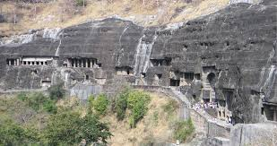
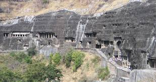

Taj Mahal
Taj Mahal is a beautiful monument built on the bank of Yamuna River in Agra. It is made up of white ivory marble. It was built as a tomb for Mumtaz Mahal, the beloved wife of Mughal Emperor Shah Jahan. The monument includes a mosque and a guest house along with a garden which surrounds the monument from three sides.
Know More


An immense mausoleum of white marble, built in Agra between 1631 and 1648 by order of the Mughal emperor Shah Jahan in memory of his favourite wife, the Taj Mahal is the jewel of Muslim art in India and one of the universally admired masterpieces of the world's heritage.


 
